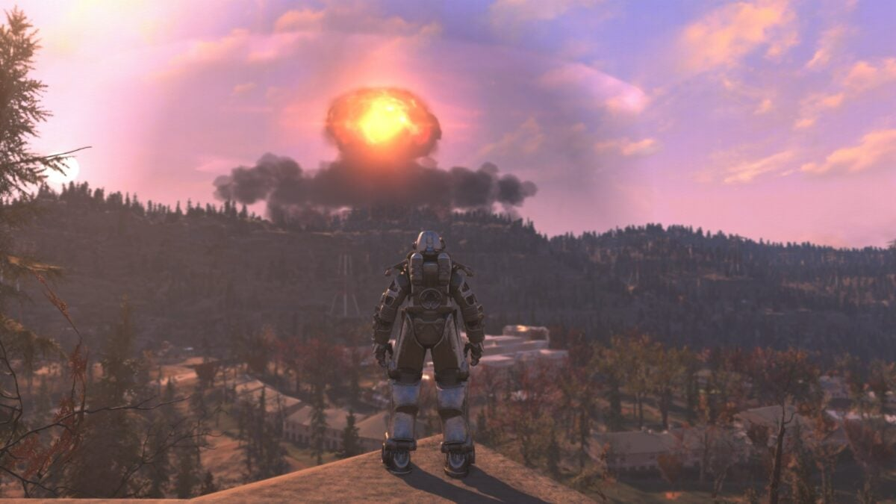
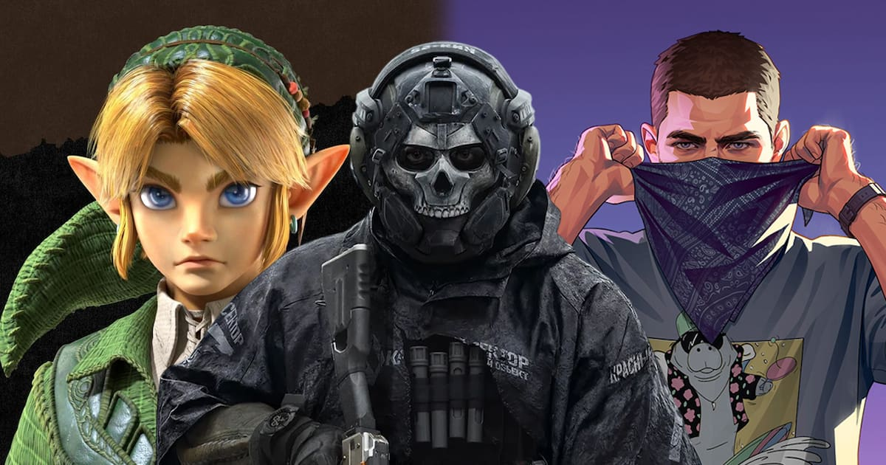
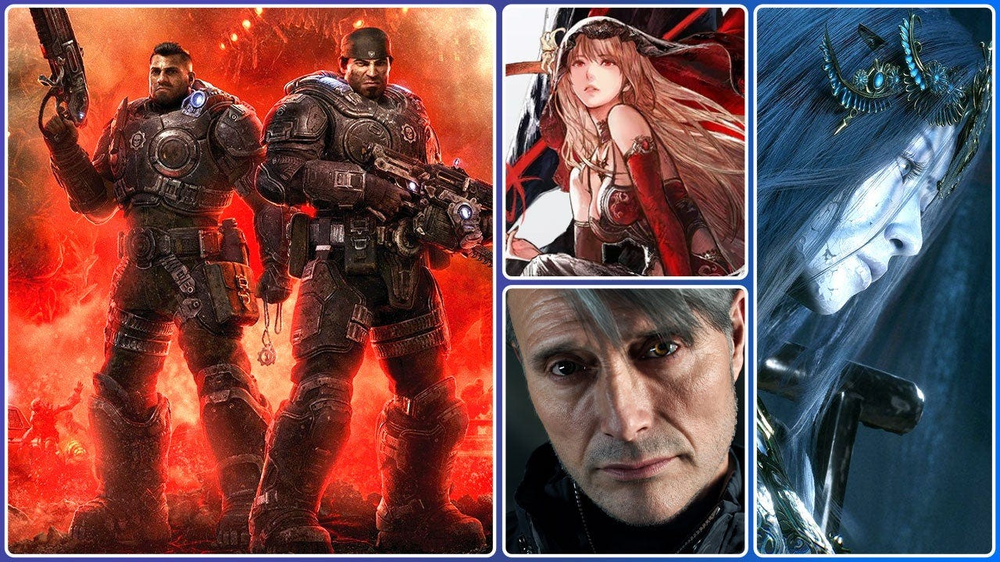

← Back to front pageGAMINGGaming
8 digest(s) · newest first
The biggest gaming story of the week is the one that has nothing to do with a release date: the final trailer for Grand Theft Auto VI, which Rockstar released and which has already drawn more attention — and more commentary — than most full game launches. The trailer is an impressive montage of emotional and bombastic moments set to a strong soundtrack, and the studio also released a preview of the in-game radio stations, giving players their first real glimpse of the world's audio identity. GTA VI has been the most anticipated game in the industry for years, and the final trailer's reception matters because it lands in a landscape where Nintendo is dominating coverage (192 articles this week, up 66%), the Switch 2 is the hardware everyone is writing about, and the PC launcher wars between Steam and Epic's "vibe-coded" new launcher are becoming a genuine subplot.
The throughline is that the industry is in a weird moment where the biggest news story is a trailer for a game that won't ship for years, while the real structural stories — studio closures, layoffs at Fishlabs and Ubisoft's German studios, Wizards of the Coast refusing to voluntarily recognize a D&D union drive — are getting less oxygen. The Liquid Swords CEO confirming studio closure following bankruptcy proceedings is a concrete example: a studio that shipped games disappears, and the news cycle moves on to the next trailer. The House House choosing not to put Big Walk on Xbox in accordance with the Palestinian-led BDS boycott against Microsoft Games is a rare example of a studio making a political decision that will actually show up in a product's platform availability.
What to watch next: the November 3 launch of Zero Parades: Director's Cut across Xbox Series X|S, PS5, and Switch 2; whether AMD FSR 4.1's October arrival on Xbox consoles and handhelds changes the performance conversation; and how the Nintendo Switch 2's first meaningful software line-up — Wii Sports back on the Switch 2, Nintendo Switch Sports Resort — shapes the holiday selling season.

Date saved: 2026-10-21 03:00 (PDT)
Sources: The Game Traders, The Verge, GamesIndustry.biz, Game Informer, IGN, Polygon, Xbox, Steam News, GamesRadar, RPS
Key findings
GTA VI final trailer and Rockstar's radio preview
- Grand Theft Auto VI received its final, salacious trailer — an impressive montage of emotional and bombastic moments set to a great soundtrack; the studio also released a preview of the hosts and songs players can expect to hear on six of GTAVI's radio stations. (Source)
- GTA 6's reservation campaign has reportedly already pulverized the profits that San Andreas took a year to achieve, according to Spanish outlet Vandal. (Source)
The trending hardware and platform story: M-VAVE FM-1, Switch 2, Xbox
- Nintendo dominated gaming coverage this week with 192 articles — up 66% from the previous period; the Switch 2 led hardware coverage with 118 mentions; Grand Theft Auto led individual game mentions with 42 hits. (Source)
- Wii Sports is back on the Switch 2, and it rules; Nintendo Switch Sports Resort is quietly one of the console's most important games. (Source)
- Xbox is experimenting with a blades dashboard; Xbox CTO Scott Van Vliet has been "cooking up retro vibes" as part of Microsoft's new Xbox Labs effort, resulting in what looks like a vibecoded option to pick your dashboard on an Xbox console. (Source)
- AMD is bringing FSR 4.1 to Xbox Series X|S and Xbox Ally in October — 37 stories across 5 outlets covered the announcement this week. (Source)
- Microsoft reportedly plans an Xbox handheld in 2027 and a next-gen console in 2028; the next Xbox could cost between $1,200 and $1,800 if Microsoft doesn't subsidize it. (Source)
- Epic's new "vibe-coded" launcher has some rough edges, per The Verge; the new Steam client update beats out Epic Games' launcher. (Source)
Studio closures, layoffs, and labor
- Liquid Swords CEO confirmed studio closure following bankruptcy proceedings; the founder said "I've done everything I can to make this succeed, and I'm very proud of what we achieved together." (Source)
- Ubisoft is negotiating voluntary exits at three German studios — Dusseldorf, Berlin, and Mainz — with approximately 100 employees potentially affected; the cuts are reportedly taking place to "best position its] German studios for the future." ([Source)
- Fishlabs announced layoffs due to "changing project requirements," with development and support teams affected; the studio "remains committed to its partner projects and our teams moving forward." (Source)
- Wizards of the Coast declines to voluntarily recognize the D&D and Studio X union drive; staff on the D&D and Studio X teams will now vote in a National Labor Relations Board election. (Source)
- House House chose not to put Big Walk on Xbox in accordance with the Palestinian-led BDS boycott against Microsoft Games. (Source)
October releases and announcements
- Enshrouded 1.0 launched on Steam and PS5 on October 15 at $39.99 / EUR 39.99, with a 10% discount for the first 14 days. (Source)
- Castlevania: Belmont's Curse released October 15 — a 2D action game about monster hunters set in 1499 Paris. (Source)
- Call of Duty: Modern Warfare 4 is set for October 23 — a new installment in the shooter franchise, now set on the Korean Peninsula with traditional multiplayer and an updated DMZ mode. (Source)
- Final Fantasy Resonance is coming October 22 — an adventure RPG whose creators want to show that "pixel graphics have no limits." (Source)
- Final Fantasy VII Remake Intergrade is coming to Xbox Game Pass on October 29. (Source)
- Zero Parades: Director's Cut launches on Xbox Series X|S, PS5, and Switch 2 on November 3. (Source)
- Drova II: Torn Lands was announced without a locked date on October 15 as a sequel to Drova: Forsaken Kin. (Source)
- Control Resonant surpassed 1 million copies and became the fastest-selling game in Remedy's history. (Source)
- Cyberpunk Edgerunners 2 premieres on Netflix October 20, 2026, with a new Night City story and cast. (Source)
- Shrek 2 Remastered was officially announced with a must-see GTA 6-inspired trailer. (Source)
- The Wolf Among Us Remastered officially released a new story trailer. (Source)
- Griffin Gaming Partners and Entertainment 360 launched a new company — HITpoint Entertainment — to support video game adaptations for film and TV. (Source)
Source links
Gaming this week is led by two separate stories dominating feeds — one about a viral game moment spawning an AI-powered clone wave on Roblox, and one about the GTA 6 final trailer dropping with what reviewers are calling an emotionally bombastic montage. The AI-clone story is the more culturally significant of the two: a "punch the wall to escape" game went viral on social media, and within a day several nearly identical copies appeared on Roblox, raising arguments about whether game ideas should be public and highlighting the speed at which AI tools can replicate a concept. That is a scene-level debate, not just a release-listing story, and it belongs at the top of the digest.
Behind the viral stories, the October 2026 ID@Xbox Showcase gave us a look at what's coming to Xbox platforms from indie developers — Castlevania is returning, alongside Toy Story, Jackbox, Kingdom Hearts, and Just Dance. Riot Games revealed a new Valorant agent, Hush, the Duelist who bends reality. And the Call of Duty: Modern Warfare conversation is dominated by player reaction to parry mechanics showing up in a CoD game for the first time — enough that Polygon built a story around the complaint "How Dare They Put This Many Parries in a Call of Duty Game."

Date saved: 2026-10-20 23:15 (PDT)
Sources: The Game Traders, Game Informer, Beebom, The Click, Polygon, Destructoid, Ground News
Key findings
Viral "punch the wall to escape" game spawns AI clone wave on Roblox
Ground News reported that a "punch the wall to escape" game went viral on social media, and the day after the sample video was posted, several nearly identical works appeared on Roblox — part of a trend of AI-powered clone games. Some developers are arguing that "ideas should not be made public," while others see this as the natural consequence of AI tools making game replication fast and cheap. The story is dominating forum discussion and is the most talked-about community drama of the week. (Ground News)
GTA 6 gets final trailer
Game Informer reported that Grand Theft Auto VI got its final, salacious trailer — an impressive montage of emotional and bombastic moments set to a great soundtrack. The trailer is the capstone of one of the most anticipated game releases in the industry's history, and GTA led individual game mentions with 185 hits this week according to The Game Traders' trending dashboard. (Game Informer)
ID@Xbox Showcase: Castlevania, Toy Story, Kingdom Hearts, Just Dance
Game Informer reported that the October 2026 ID@Xbox Showcase began on October 20 at 6 PM BST, with IGN and Xbox presenting trailers and gameplay from eighteen upcoming games. The showcase included Castlevania returning, alongside Toy Story, Jackbox, Kingdom Hearts, and Just Dance. The event is the primary window into what independent developers are bringing to Xbox platforms in the coming months. (Game Informer)
New Valorant agent Hush revealed
Beebom reported that Riot Games revealed a new Valorant agent, Hush, the Duelist who bends reality. The reveal is the latest in Riot's ongoing agent cadence for its tactical shooter, which remains one of the most-played competitive games in the world. (Beebom)
Call of Duty parry mechanics spark player backlash
Polygon reported that "How Dare They Put This Many Parries in a Call of Duty Game" became a story after players reacted negatively to parry mechanics appearing in a Call of Duty title. Modern Warfare mentions jumped 136 this week, per The Game Traders, and the story saw 114 stories across 31 outlets. The reaction is a classic case of a mechanic that works in a fighting game reading very differently in a tactical shooter. (Polygon)
Nintendo dominates coverage, Switch 2 leads hardware conversation
The Game Traders reported that Nintendo dominated gaming coverage this week with 640 articles — up 33% from the previous period. The Switch 2 led hardware coverage with 300 mentions. Grand Theft Auto led individual game mentions with 185 hits. The trending dashboard tracked 5,297 articles over the last 7 days across 67/72 active feeds. (The Game Traders)
Cyberpunk Edgerunners 2 premieres October 20
The Click reported that Cyberpunk Edgerunners 2 premieres on Netflix on October 20, 2026, with a new Night City story and cast. The premiere is the second season of the anime that brought the Cyberpunk 2077 universe to a broad audience and is one of the most anticipated gaming-adjacent releases of the week. (The Click)
Source links

Date saved: 2026-10-20 18:00 (PDT)
Sources: The Game Traders, The Verge, The Click, Game Informer, Polygon, GameSpot, VGC, GamesIndustry.biz, Videogamesindustrymemo, Rockstar Games, Xbox Wire, Noisy Pixel, Bleacher Report
Key findings
TRENDING FIRST: What's dominating feeds right now
GTA VI is the story everyone is talking about. Rockstar Games released the final GTA VI launch trailer on October 15, 2026 — an "impressive montage of emotional and bombastic moments all set to a great soundtrack." The game launches November 19, 2026. Rockstar's head of publishing Jennifer Kolbe denied reports that GTA 6's budget exceeded $1.5 billion, while confirming it's the company's most expensive project ever. Rockstar has doubled its workforce over the last eight years to 4,711 staff across 12 offices. Bloomberg projects the game could generate $3 billion in revenue and 40 million sales within the first four months, with launch week cumulative sales tracking toward $3.25-$5.2 billion. The online multiplayer and PC version are reportedly scheduled for Q1 2027. (Source)
Nintendo dominates coverage — 598 articles, up 29% week-over-week. The Switch 2 generated 287 hardware mentions. Grand Theft Auto led all individual game mentions with 198 hits and 133.1k watching on Twitch. Nintendo had a bumper financial quarter — profits surged 53.5% to $925 million after receiving a massive refund from the US government following the Supreme Court ruling that Trump's "liberation day" tariffs were illegal, with the first tranche of an estimated half-billion-dollar tariff refund boosting operating income by $339.6 million to $1.27 billion. (Source)
Resident Evil remakes on Switch 2 are the biggest review story. "Resident Evil 2, 3, and 4 Remakes (Switch 2) Review – Horror on the Go" from GamingBolt is the biggest story of the week. (Source)
Castlevania is back and breaking the internet. After beating Castlevania: Belmont's Curse, players can help Dracula rebuild in a new roguelike — GameSpot's coverage drove Belmont Curse mentions up +111 this week across 29 outlets. Street Fighter officially set a new franchise box office record (Polygon). The Legend of Zelda: Ocarina of Time remake is borrowing one of Breath of Wild's most immersive features (GamesRadar). 7 Things Zelda: Ocarina of Time Remake Hasn't Revealed, Ranked drove +68 Ocarina Time mentions. (Source)
Cyberpunk Edgerunners 2 premieres on Netflix today — October 20, 2026. A new Night City story and cast. (Source)
ID@Xbox Showcase — today, October 20, 2026 at 6 PM BST. IGN and Xbox are presenting trailers and gameplay from eighteen upcoming games. The Wolf Among Us Remastered is one of the confirmed appearances, alongside presentations from Critical Reflex Games and several unannounced premieres. (Source)
Major releases and announcements
- Psychological Horror Thriller 'When Sirens Fall Silent' confirmed for PS5 and Xbox Series X|S — Noisy Pixel broke the news. (Source)
- Faraway — launch November 5 on Nintendo Switch and Switch 2, PC, PS5, and Xbox Series X/S. You play as a shooting star slingshotting around other stars. (Source)
- Titanium Court — October 29 on Nintendo Switch, Switch 2, PS5, and more. The hard-to-explain indie hit won the Seumas McNally Grand Prize at this year's IGF Awards. (Source)
- NBA 2K27 debuting on Xbox store on PC this week — becoming an Xbox Anywhere title. (Source)
- HeroQuest Digital Edition coming to Steam — Nomad Games confirmed release timing, online co-op, platforms, and the Quest Editor. (Source)
- Escape From Playtime — Steam Early Access launches October 21, 2026. (Source)
- El Paso, Elsewhere 2: Vampire Shooter Sequel — demo available now alongside new trailer; gargoyles, possessed animatronics, and vampires. (Source)
- Mafia III gets surprise PS5/Xbox Series X/S 60 FPS update — free if you already own the game. (Source)
- Forza Horizon 6 on PS5 delayed to 2027 — will launch alongside the game's first premium expansion. (Source)
- Peak — viral co-op climbing hit seemingly coming to PS5 (VGC). (Source)
- Friendslop — hit indie co-op climbing game launches on consoles this month. (Source)
- The Elder Scrolls IV: Oblivion Remastered — arrives on Nintendo Switch 2. (Source)
- Madden NFL 27 — first major sporting release of EA's Saudi Arabian era. (Source)
Industry finance: a mixed picture
- Microsoft Q2 2026: Revenue grew 17% year-on-year to $81.3 billion; operating income up 21% to $38.3 billion. (Source)
- Tencent: Net sales hit $12.4 billion (¥1.9 trillion), up 99.3% year-on-year; operating profit up 21.3%. (Source)
- NetEase: Q3 net bookings $399.5m (€338m), up 12% year-on-year — overperforming Ubisoft's expectations. Revenue grew 43% to $1.4bn. (Source)
- Ubisoft: Q3 revenue grew 43% to $1.4bn, bookings up 63% to $2.2bn, but recorded a $318m loss for the quarter. FY2025-26 sales totaled €1,395.7m, down 21.8%. The FY2026-27 line-up includes Assassin's Creed Black Flag Resynced (July 9, 2026). (Source)
- Capcom: Another banging quarter — Q1 net sales up 54.7% year-on-year to $430m; operating profit up 66.9% to $250m. (Source)
- Take-Two: Net bookings of $1.39bn, above guidance. (Source)
- ByteDance reportedly close to selling Moonton (Mobile Legends: Bang Bang) to Savvy Games for $6 billion. (Source)
- Roblox Q2 revenue rises 36% to $1.5bn. (Source)
- Xbox revenue plunges $1.7bn, hardware dropping 29% YoY. (Source)
Controversy and community drama
- Epic's new launcher: "vibe coded" and rough around the edges — Kotaku spotted people posting videos showing strange visual issues with the updated launcher that agents wrote code for. (Source)
- House House chose not to put Big Walk on Xbox in accordance with the Palestinian-led BDS boycott against Microsoft Games. (Source)
- Nekome: Nazi Hunter — the director spoke about whether the game is political, its art inspiration, metaphysical themes, Steam demo, and more. A new trailer highlights the nazi-killing narrative. (Source)
- Stranger Than Heaven: Snoop Dogg teaches protagonist Makoto how to rap in a new story trailer — the first stop takes Makoto Daito to Kokura, Fukuoka, Japan. (Source)
- VeggieGen Gaming announced the Switch 2 will support physical game cards, with the company planning to offer exclusive editions of its upcoming titles for the format. (Source)
Hardware and ecosystem
- Honeycomb Aeronautical's Echo Aviation Controller XPC — $179.99 — reservations now open for the Xbox-compatible flight simulator gamepad, ahead of sales starting November 20th. (Source)
- Apple teases MacBook Pro event next week — Apple's second October event. (Source)
- Video game ownership bill introduced in Congress. (Source)
Source links

Date saved: 2026-10-20 10:26 (PDT)
Sources: Ars Technica, Polygon, Kotaku, The Verge, TwistedVoxel, GamesIndustry.biz, Hitmarker, TheGamer
Every PlayStation 5 sold is a computer that its owner is forbidden to fully use. The console-hacking scene spent September and October proving that line is fictional — and spent the same weeks watching what happens when AI moves the same tools into everyone's hands.
The Relapse jailbreak: ten seconds and a DNS change
The exploit called Relapse works on PS5 and PS5 Pro units running firmware 7.00 through 13.60 — that is, almost every console in the wild. The recipe is public: set the primary DNS to `45.56.67.85`, open the User Guide, type the exploit address, wait. The code is on GitHub under an MIT licence, so it is free to use, modify and improve. It chains a WebKit memory-corruption bug in the console's hard-to-reach browser with a kernel use-after-free, and installs an ELF loader for running arbitrary code (Ars Technica; Yahoo/Gaming).
It is rough work, and the scene is honest about it: the jailbreak is tethered and dies on reboot, the kernel stage can hang or panic the machine, and Sony will ban a flagged account. But as Ars Technica notes, it is dramatically better than what came before — earlier PS5 exploits could hang a console for 50 minutes per attempt. Unlocked machines run homebrew, emulators, unofficial 60 fps patches for PS4 classics, and game backups.
Sony's answer: update and be locked out again
Firmware 14.00, released September 16, closed Relapse. Then on October 20, developer Gezine published proof of reaching the PS5 debug menu on firmware 14.10 — kernel-level access on the current firmware — while keeping the exploit private. The hypervisor remains the wall: without beating it, dumping game files is still out of reach. Researcher ZigZagBoi1 is documenting kernel-vulnerability work on GitHub and says a 14.10 jailbreak before Grand Theft Auto VI's November 19 release is possible if the community helps — the stated goal being to dump GTA VI's files and run them elsewhere.
Read the sequencing: the biggest launch of the year requires firmware 14.10, and Sony's security strategy is to make owning your console incompatible with playing new games. Every update is a lockout dressed as a fix.
AI changed who can do this
Kotaku's reporting ties the current wave of decompile-and-recompile projects, browser "ports" and mash-up mods to Anthropic's Claude Opus 5.5 update on September 22. GitHub's DMCA request logs are filling with publisher takedowns; posts showing the work get legal notices on an hourly basis.
The same tools produced the year's two most-followed IP showdowns (Kotaku):
- Fallout: New York, a browser game built in five days, drew 3.5 million views before Bethesda sent a cease-and-desist. Its author, ChrisFirst, abandoned it on October 1: "Sorry to everyone who enjoyed the game! But the suits got involved and the fun is over."
- Maurice Heumann used 17 AI agents in parallel to decompile the original Modern Warfare 2 into a playable build. Activision had his footage disabled and the hosting site made unreachable.
Notice who gets sued. Publishers are not litigating against the AI companies whose models were trained on all of it — they are litigating against individual fans and hobbyists. The fans did the transformative work; the studios kept the catalogue.
Meanwhile, the people who make the games are organizing — and being cut
While this plays out, from GamesIndustry.biz and Hitmarker this month:
- Activision QA workers, organized with the CWA, voted to authorize a strike, saying the publisher has "failed to bargain in good faith over key issues."
- Studio Liquid Swords filed for bankruptcy with staff reportedly unpaid for two months.
- Ubisoft plans cuts across Düsseldorf, Berlin and Mainz and has proposed closing Trials developer RedLynx plus 70 jobs in Singapore.
- Epic confirmed its launcher was "vibe coded" — the claim being 46% faster than Steam from cold start to store page, with broken visuals posted by users and a features list thin enough that having a shopping cart counts as a win (The Verge) — and is moving its Disney shooter to AI-first development.
The efficiency claims are always about cost. When a studio declares an AI-first pivot, the productivity gain accrues to the shareholders and the downside lands on the payroll.
The actual fight is not pro- or anti-AI
The framing pushed by the industry is a trap: people who like AI versus people who don't. The real question is who owns the result — and right now the answer is: the publisher owns the game you bought, the platform owns the store you buy it from, and the console owner owns nothing that survives an update.
That is why the two threads belong in one story. The same industry that sues a fan for rebuilding a game in a weekend will happily ship you a launcher an AI wrote in an afternoon, and will happily push an update that turns your hardware back into a rental. And it is why the QA workers' strike at Activision and the jailbreak scene are doing versions of the same thing: refusing the terms as written.
A bill called the Power To The Players Act — on video-game ownership — has been introduced in Congress. It will be lobbied against by every company named in this article.
What you can do:
- Don't auto-update a console you own. An un-updated machine keeps its rights. That is not piracy advice; it is asset preservation — and it is why firmware 13.60 machines are suddenly the most interesting computers in the living room.
- Support the striking workers. Activision QA's CWA unit voted to strike this month. Their fight over "good faith" bargaining is the same fight over whether AI productivity gains go to the payroll.
- Buy from studios that disclose AI use — and say so where they can see it. Larian had to pledge publicly that Divinity would have no GenAI art; that pressure came from players.
- Back the ownership bill when it hits your representatives, and watch for the carve-outs.
Source links
Date saved: 2026-10-20 03:00 (PDT)
Sources: The Verge, Game Traders, VGC, GamesIndustry.biz, Hitmarker, Player.gg, iXBT.games, Eurogamer, Khel Now
Key findings
TRENDING: Call of Duty: Modern Warfare 4 dominates launch week
- Khel Now / Player.gg (October 2026): Call of Duty: Modern Warfare 4 is releasing this week and is already earning widespread praise for its darker campaign, stronger storytelling, and Very Positive Steam reviews. It has become the highest-rated Call of Duty on Steam in years, with PC Gamer publishing a review-in-progress calling it "a campaign you shouldn't skip." The Game Traders trending dashboard shows Modern Warfare dominating with 12.1K Twitch watchers and 198 news mentions across 67 active feeds — the single most-covered individual game this week. (Source)
- Game Traders Trending Dashboard (October 19, 2026): Nintendo dominated gaming coverage this week with 598 articles — up 29% from the previous period. Grand Theft Auto led individual game mentions with 198 hits. Hardware coverage was led by the Switch 2 (287 mentions). Two of the biggest surge phrases in headlines: "Modern Warfare" (+96 mentions) and "Castlevania Belmont's Curse" (+111 mentions). (Source)
TRENDING: GTA 6 launch trailer and the CYBERLEEK memecoin crash
- VGC / Hitmarker (October 2026): Rockstar Games revealed the official launch trailer for Grand Theft Auto 6, a 90-second trailer featuring original music from French electronic duo Justice. GTA 6 fans are celebrating after the CYBERLEEK cryptocurrency memecoin crashed, reducing momentum behind alleged gameplay leak threats. The Game Traders dashboard confirms GTA VI as the most-mentioned individual game across all outlets with 198 mentions. (Source)
- GamesIndustry.biz / Hitmarker (October 2026): Rockstar released the GTA 6 launch trailer with an original score by Justice. (Source)
TRENDING: Epic's "vibe coded" launcher controversy
- The Verge / Kotaku (October 2026): Epic Games' new launcher was built with AI — what Epic calls "vibe coded" — and fans are posting videos showing strange visual issues. Epic claims the new launcher runs 46% faster than Steam from cold start to store page, but it's "light on features" and at least has a shopping cart. The phrase "vibe coded" has become a flashpoint in the ongoing debate about AI's role in software development. (Source)
- GamesIndustry.biz (October 2026): Epic reportedly shifts its Disney shooter to AI-first development, signaling the company's broader bet on AI-assisted game production. (Source)
TRENDING: AI cloning fears — Moonlighter studio locks down playtest
- The Verge (October 19, 2026): Digital Sun, the studio behind Moonlighter, announced it won't host a public playtest of its next game, ReVamp, due to rampant AI-led cloning. The studio said: "We've been concerned by recent news of games being reverse-engineered, cloned and published before the original is even out. With launch still months away, sharing a build with tens of thousands of players felt like too big a risk." The studio wants to see platforms strengthen protections for original work. Eurogamer and GamesIndustry.biz both covered the story as a clear sign of industry anxiety about AI-generated game clones. (Source)
Industry shakeups — layoffs, unionization, and studio closures
- GamesIndustry.biz (October 2026): Activision QA United-CWA union vote authorized a strike, claiming the publisher has "failed to bargain in good faith over key issues." Samson studio Liquid Swords filed for bankruptcy, with staff reportedly unpaid for two months. Ubisoft plans to reduce workforce across Düsseldorf, Berlin, and Mainz as part of a "proposed voluntary departure plan" affecting approximately 100 employees. Fishlabs announced layoffs due to "changing project requirements." Funcom began restructuring to focus on Dune: Awakening and Conan Exiles. Dune: Awakening studio faced layoffs as it restructures following console release. (Source)
- Hitmarker (October 2026): Ubisoft proposes closing Trials developer RedLynx and cutting 70 jobs in Singapore. Xbox forms Xbox Labs to explore new gaming technology following the rise of AI-powered mods and ports. Xbox CEO says new franchises remain essential despite focus on biggest games. Google launches AI game creation platform Playground, with Unity Spark coming later this year. (Source)
Hardware and platform news
- The Verge (October 2026): Microsoft announced the Xbox Nano Controller — a smaller, cheaper alternative at $49.99, available from November. Lenovo's SteamOS handheld (Legion Go) is on sale with double the RAM and storage of the base Steam Deck OLED. The 8BitDo Pro 3 wireless controller is available for $47 at Woot — compatible with Switch 2, Windows, Apple, SteamOS, and Android. (Source)
- VGC (October 2026): Microsoft has launched Xbox Disc-to-Digital games for Xbox Insiders — a list of 243 supported games. The physical Switch 2 edition nightmare became reality as Nintendo sent a player to the publisher over a physical edition issue. (Source)
Releases and upcoming titles
- The Verge / Player.gg (October 2026): Faraway — a game where you play as a shooting star — launches November 5 on Switch 2, PC, PS5, and Xbox Series X/S. Saros' "Zenith" update adds boss rush mode, slo-mo, New Game Plus. Arc Raiders player numbers hit a six-month high after the Frozen Trails update. No Man's Sky is coming to iPhone and iPad on October 28. Cyberpunk: Edgerunners 2 released on Netflix. Final Fantasy 7 Revelation won't lock Hard Mode behind beating the game. Castlevania: Belmont's Curse — a roguelike where you help Dracula rebuild after beating the game — generated 111 surge mentions this week. Sega pulled Total War: Shogun 2 – Complete Edition remaster from stores over bugs and AI art issues. The Power To The Players Act, a video game ownership bill, was introduced in Congress. (Source; Source; Source)
Source links
Date saved: 2026-10-19 18:00 (PDT)
Sources: Ground News, Video Games Chronicle, GamesIndustry.biz, Beebom, PlayStation Blog, FOX on Games, iXBT.games, Khel Now
Key findings
🔥 TRENDING: Viral Game Clones & AI-Powered Ripoffs
- Ground News (Oct 2026): A viral 'Punch the Wall to Escape' game on social media sparked an immediate wave of AI-powered clone games on Roblox — with nearly identical copies appearing the very next day. The phenomenon has ignited debate in indie dev circles about whether game ideas should even be made public given how quickly AI tools can replicate them. The story is dominating discussion on game dev subreddits and Twitter. (Source)
🔥 TRENDING: Fortnite Chapter 8 & Major Live-Service Updates
- Beebom (Oct 2026): Fortnite players are bracing for Chapter 8 as sprites look like they're leaving. The Yeat collaboration was officially announced and drops October 15. Meanwhile, Sony took down the Overdrive PS5 jailbreak store that offered 1,600+ free games, and No Man's Sky is coming to iPhone and iPad with full 10 years of content — a massive port that excited the community. (Source)
- FOX on Games (Oct 18, 2026): Apex Legends' 'Blood Pact' Halloween event drops players into a nighttime, fog-covered Haunted Kings Canyon with a Beasts vs. Demons wildcard faction system, enemy-seeking Rev Shell grenades, and jump-scare loot bins. Rust's annual Halloween update returns with trick-or-treat candy runs and a mad-scientist Frankenstein monster-building mechanic. Marvel Rivals rolls out Halloween skins and an 18v18 Annihilation battleground at Alchemax Headquarters. (Source)
- FOX on Games (Oct 16, 2026): A hands-on preview of Nintendo's upcoming ground-up remake of The Legend of Zelda: Ocarina of Time tested modern controller overhauls, manual jumping, swimming mechanics, and Kokiri Forest progression — positioning it as a showdown with Grand Theft Auto VI. In a major industry moment, Activision's executive said 'no offense to Zelda' but GTA 6 and Call of Duty: Modern Warfare 4 are 'the two biggest games of the year.' (Source)
🔥 TRENDING: GTA 6, CoD MW4 & the 'Call of Duty Tax'
- Video Games Chronicle (Oct 15, 2026): Rockstar revealed the official launch trailer for Grand Theft Auto 6 — a 90-second trailer featuring original music from Justice. Call of Duty: Modern Warfare 4 became the highest-rated Call of Duty on Steam in years, earning widespread praise for its darker campaign and stronger storytelling with Very Positive reviews. Activision claimed the 'Call of Duty tax' means games media doesn't cover COD the way it used to, arguing its large audience has 'become status quo.' Microsoft announced the Xbox Nano Controller — a smaller, cheaper $49.99 alternative with a rechargeable battery, available from November. (Source)
- Khel Now (Oct 2026): GTA 6 fans celebrated after the Cyberleek cryptocurrency crashed, reducing momentum behind alleged gameplay leak threats. Microsoft launched Xbox Disc-to-Digital games for Xbox Insiders with a list of 243 supported titles. (Source)
Industry Layoffs, Studio Troubles & Controversy
- GamesIndustry.biz (Oct 2026): Ubisoft is reducing workforce across Düsseldorf, Berlin, and Mainz as part of a 'proposed voluntary departure plan' affecting approximately 100 employees. Fishlabs announced layoffs due to 'changing project requirements.' Samson studio Liquid Swords filed for bankruptcy with staff reportedly unpaid for two months. House House will not release Big Walk on Xbox in support of the pro-Palestinian BDS campaign. Activision QA United-CWA union voted to authorize strike, claiming the publisher 'failed to bargain in good faith over key issues.' (Source)
- iXBT.games (Oct 2026): Silent Hill 2 Remake developers want to find the next Hideo Kojima. Dune: Awakening's success was not enough for Funcom, which laid off employees again. Bloober Team is preparing the horror exclusive Onyx: The Dark Grip, aiming to bring back the GameCube era feel. Epic Games claims its new 'vibe coded' launcher runs 46% faster than Steam from cold start to store page — with the company acknowledging it is 'light on features' but at least has a shopping cart. (Source)
- GamesIndustry.biz (Oct 2026): Sega pulled Total War: Shogun 2 — Complete Edition from stores over bugs and AI art concerns. The original 2011 classic was pulled from sale due to the new version being released. UKIE partnered with Sheridans on an AI Compliance and Accreditation Service to guide UK studios in using AI lawfully, culminating in an AI Certification Mark for pitches and funding rounds. (Source)
Releases & Platform News
- PlayStation Blog (Oct 2026): The Saros: Zenith update is out today for Housemarque's roguelike, bringing boss rush mode, New Game+, new gameplay modifiers, trophies, and accessibility options. Peak climbs its way onto PS5 on October 22. The Wolf Among Us Remastered returns to Fabletown on October 29. Kena: Scars of Kosmora launches in 2027. Helldivers 2's Scope of Authority Premium Warbond launches October 20. PlayStation Plus October catalog includes Mafia: The Old Country, Horizon Forbidden West, and Mycopunk. (Source)
- GamesIndustry.biz (Oct 2026): The GDCA 2027 moves away from a nominations-based system — publishers and devs can now submit games directly for consideration. Gamescom Asia x Thailand Game Show 2026 announced four additional pavilions from Indonesia, Japan, Malaysia, and the US, hosting 29 countries and regions in the 'most international line-up in show's history.' (Source)
- Video Games Chronicle (Oct 2026): WWE 2K26 is collaborating with Capcom for a DLC pack adding five WWE wrestlers as Street Fighter action figures. Assassin's Creed creator shows 1666: Amsterdam gameplay — investigations by day, hunting by night. The Switch 2 version of 007 First Light finally gets a new release date, a year after its original target. A former Nintendo employee is auctioning classic items including the original Donkey Kong art, with an estimated value up to $150,000. (Source)
Source links

Date saved: 2026-10-19 03:00 (PDT)
Sources: Shazoo, The Game Traders, HappyGamer, LevelUp, Sortiraparis, GamesIndustry.biz, Beebom, Vandal, Beebom
Key findings
TRENDING: What's viral in gaming right now
- Shazoo (October 2026): A Taiwanese browser game, Fab24hr: A Day in the Life of a Semiconductor Wafer Factory Worker, became a viral hit in Taiwan — engineers compare it to horror. Pokémon HeartGold was fully decompiled using AI agents over one month, costing $56,000 in API fees. Family Time — a viral colony sim about raising thousands of children with a wolf-woman wife — hit the Steam top 50 most-wanted titles and immediately spawned a clone with the exact same name. An indie dev showed a prototype of a game about hitting walls — less than a day later, a clone appeared on Roblox. Blizzard wants real Horde vs. Alliance war in World of Warcraft Forever — including raids on capital cities. (Source)
- The Game Traders (October 18, 2026): Nintendo dominated gaming coverage this week with 603 articles — up 27% from the previous period. Grand Theft Auto led individual game mentions with 192 hits. Hardware coverage was led by the Switch 2 (290 mentions). The biggest story: Resident Evil 2, 3, and 4 Remakes Are Now Available on Nintendo Switch 2 (GamingBolt). Also: psychological horror thriller When Sirens Fall Silent confirmed for PS5 and Xbox Series X|S (Noisy Pixel). GTA VI launch trailer on base PS5: 1440p upscaled to 4K, no sign of QSSR, and a long-standing RAGE animation bug seemingly fixed (Digital Foundry). Overwatch's Hero 55, an Omnic Detective, is reportedly a Support and the last new hero of 2026. (Source)
- HappyGamer (October 2026): Modern Warfare 4 campaign gets first "unhinged" verdict after early access opened October 17. Valorant Hush abilities leaked ahead of a reported October 27 release. A fan comparison suggests Rockstar fixed plane scale in GTA 6 vs GTA 5 aircraft. Dead by Daylight disabled the Grim Pantry map effective immediately. Until Dawn 2 — PS5 game launching January 28, 2027 from Firesprite — revealed host Owen. Peligrosa returned to Fortnite after 250 days (HYPEX). An analysis of 12,320 Steam Early Access games found 6,989 went a year without an update. (Source)
TRENDING: GTA VI and the big October-November release slate
- Beebom / Digital Foundry (October 2026): Sony's next-gen console, the PlayStation 6, points to a $1,000+ price tag, per a new leak on October 16 from hardware leaker KeplerL2, who claims the PS6's memory and storage alone add significantly to the cost. GTA VI releases November 19, 2026. (Source)
- LevelUp (October 2026): Activision dismissed The Legend of Zelda: Ocarina of Time remake, claiming GTA VI and Call of Duty: Modern Warfare 4 are the biggest games of 2026. Call of Duty: Modern Warfare 4 launches October 23 for PS5, Xbox Series X|S, PC, and — to many people's surprise — Nintendo Switch 2. The FPS arrives 27 days before GTA VI, and its release will be very close to The Legend of Zelda: Ocarina of Time remake, scheduled for November 5. (Source)
Xbox strategy shift and new initiatives
- LevelUp (October 2026): Microsoft is considering a radical shift — games from acquired studios, excluding Call of Duty and Minecraft, would stop receiving post-launch content updates on PlayStation 5 or Switch, keeping titles strictly within the Xbox ecosystem (Xbox Series X|S, Project Helix, PC, and cloud). Xbox Sparked widespread debate by bringing several high-profile first-party franchises to rival platforms; under executive Asha Sharma, the philosophy appears to be shifting. Xbox also announced Xbox Labs, a new initiative to trial emerging ideas and new technology, and a new XP division to deliver transmedia spinoffs including film, TV, and theme parks. House House will not release Big Walk on Xbox in support of the pro-Palestinian BDS campaign. (Source)
- GamesIndustry.biz (October 12, 2026): Xbox announces Xbox Labs, a new initiative to trial emerging ideas and "new technology." Xbox announces a new XP division to deliver transmedia spinoffs including film, TV, and theme parks. Reforj developer 4J Studios announces PC release date at Game Republic New Horizons. (Source)
October 2026 release lineup
- Sortiraparis (October 2026): Star Wars: Galactic Racer (Fuse Games, Secret Mode, Lucasfilm Games) lands October 6 for PC, PS5, and Xbox Series X|S. Final Fantasy Resonance (Square Enix) releases October 22 for PC, PS5, Xbox Series, Nintendo Switch, and Switch 2 — a new JRPG recovering turn-based combat and HD-2D aesthetics with characters from across the saga. Phantom Blade Zero (S-Game) launches October 29 for PS5 and PC. Dragon's Dogma 2: Dark Arisen expansion available October 9. Ghost of Yōtei: Echoes of Sekigahara lands on PS5 October 1. Castlevania: Belmont's Curse (Konami) launches October 15, celebrating 40 years of the franchise. Rayman Origins: Enhanced Edition (Ubisoft) arrives October 1 for PC, PS5, Xbox Series, and Switch. Gears of War: E-Day arrives October 6 for Xbox Series X|S and PC. Tenebris Somnia available October 16 on PC, PS5, Xbox Series, Switch, and Switch 2. (Source)
- Vandal (October 2026): The creators of the failed Samson game face closure: Liquid Swords enters bankruptcy. A remaster of the 2004 Shrek game leaked on Xbox, revealing graphical improvements, new functions, and a trailer parodying GTA 6. Gamers in France were attacked during riots for preventing a robbery at a video game store. (Source)
Source links

Date saved: 2026-10-18 18:01 (PDT)
Sources: VGC, IGN, Ground News, BusinessWire, Sortiraparis
Key findings
Blockbuster release window
- Ground News / IGN (Oct): October 2026 is one of the year's most intense release months — publishers deliberately crowded the window before GTA 6 launches in November: Gears of War: E-Day (Oct 6), Castlevania: Belmont's Curse (Oct 15, franchise 40th anniversary, back to 2D Metroidvania roots), and Call of Duty: Modern Warfare 4 (Oct 22-23). (Source)
- IGN (Oct): Full October slate includes Ace Combat 8 (Oct 2), Rayman Origins Enhanced (Oct 1), Dragon's Dogma 2: Dark Arisen on Switch 2 (Oct 9), Warhammer 40K: Boltgun 2 (Oct 14), Final Fantasy Resonance (Oct 22), Phantom Blade 0 (Oct 29), and Resident Evil 2/3/4 on Switch 2 (Oct 16). (Source)
Industry moves
- VGC (Oct): Rockstar revealed the official GTA 6 launch trailer — the November release continues to reshape the whole release calendar around it. (Source)
- VGC (Oct): Sega pulled Total War: Shogun 2 – Complete Edition from stores citing bugs and AI art; Epic said it "vibe coded" its new Epic Games Launcher with AI because "programming is hard"; Xbox unveiled the $50 Nano Controller (smaller, rechargeable, from November). (Source)
- VGC (Oct): WWE 2K26 x Street Fighter DLC pack adds five WWE wrestlers as Street Fighter action figures; Switch 2 version of 007 First Light got a new release date (a year late); October's PS Plus catalog adds Mafia: The Old Country, Tales of Arise and Horizon Forbidden West. (Source)
Hardware and business
- BusinessWire (Oct): Xsolla opened applications for its GDC 2027 scholarship program (75 developers); partnered with Game8 (Japan's largest strategy wiki); Take-Two (NASDAQ: MAT note) schedules Q3 2026 results for Nov 5. (Source)
- BusinessWire (Oct): ProbablyMonsters unveiled a new trailer for Nekome: Nazi Hunter at the Galaxies Autumn Showcase, revealing villains "Hitler's Hyenas," ahead of a Steam Next Fest demo. (Source)
- Sortiraparis (Oct): Star Wars: Galactic Racer — the franchise's first racing game since 2002 — launched Oct 6; Phantom Blade Zero rescheduled to Oct 29 for PC/PS5; Square Enix's Final Fantasy Resonance lands Oct 22 across five platforms. (Source)
Source links
// Get the brief by email
Twice-daily briefs — the same sourced reporting, in your inbox the moment it’s published. No ads, no trackers, one-click unsubscribe.
The email edition opens shortly — until then the RSS feed lands every brief the moment it’s published.
// Donate
If this brief is worth something to you, scan with your Zelle app.
Tap the code to open it full size.